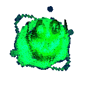

Can You See Me?
Move with WASD & your mouse to look around
Find the hidden presence before time runs out
Start your journey
work by Yelena & Scarlett
Move with WASD & your mouse to look around
Find the hidden presence before time runs out
Start your journey
work by Yelena & Scarlett

Time: 60